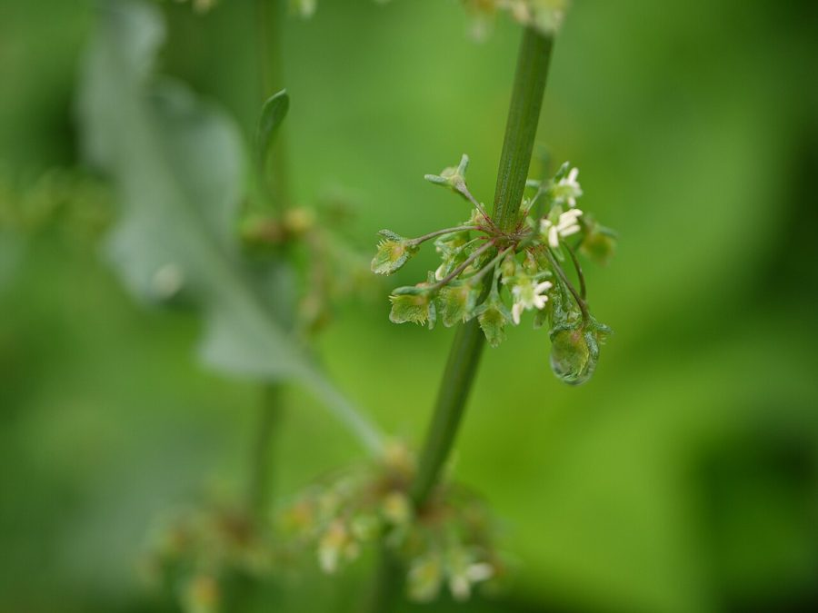

जंगली पालकToothed Dock
Rumex dentatus · Polygonaceae · FLR-0177

- Scientific name
- Rumex dentatus L.
- Family
- Polygonaceae
- Hindi
- जंगली पालक
- Local names
- jangli palak, jangli palah, sorrel, dock, sharp dock
- Status here
- native
- Movement
- Resident, here all year
- IUCN
- not evaluated
- Review
- audited and independently read
When to look कब देखें
Expected mainly in October, November, December, January, February, March, April, May.
Uses and possibilities उपयोग और संभावनाएँ
Drawn from the documented uses in the profile below, where each is labelled traditional, current or a research lead. All uses →
जंगली पालक / Toothed Dock
Rumex dentatus L. — Polygonaceae
जंगली पालक (बिना पालक, जंगली सरसों, सोरल, गुंडोल) — सर्दियों में खेतों के किनारे, बंजर जमीन पर, और सड़कों के किनारे आपसे आप उगने वाला एक पत्तेदार पौधा, जो पालक की तरह दिखता है पर असली पालक नहीं है। पत्तियाँ बड़ी-बड़ी, 20-30 सेंटीमीटर, दांतों वाली किनारी, तने लाल या गुलाबी। बहुत सस्ता, पोषक खाना। गाँवों में अक्सर इसी को उबालकर खाते हैं, विशेषकर गरीब परिवारों में। हरी सब्जी की कमी के समय यह सब्जी बहुत काम आती है।
Quick Identification त्वरित पहचान
| Feature | Description |
|---|---|
| Plant form | Winter annual, 20–50 cm, erect or ascending, sparingly branched |
| Leaves | Basal rosette and stem leaves, 15–30 cm, broadly lanceolate to oblong, margins dentate (toothed), veins prominent |
| Stem | Erect, angular, smooth or slightly grooved, green to reddish or purple |
| Flowers | Tiny, greenish, in loose, leafy panicles |
| Fruits | Triangular achenes (seeds), 3–4 mm, winged |
| Leaf tips | Distinctly pointed; leaves have a prominent arrow-shaped base |
Field tip: A winter herb with a rosette of large, toothed leaves on reddish or purple stems. The basal leaves are conspicuous and attractive. The flowers are tiny and inconspicuous, arranged in loose panicles. Look for it on field margins and disturbed ground from November to April.
Morphology आकारिकी
Biometrics (typical measurements for wild plants in northern India):
| Measurement | Range |
|---|---|
| Plant height | 20–50 cm |
| Leaf length | 15–30 cm |
| Leaf width | 8–15 cm |
| Flower cluster diameter | 5–15 cm |
| Fruit (achene) length | 3–4 mm |
Root system: Taproot, extending 20–30 cm deep; capable of reaching water in semi-arid conditions.
Stems: Erect or ascending, angular, smooth or slightly ridged, typically green but often tinged with red or purple at the base and along the veins.
Leaves: Basal rosette in young plants; later, alternate stem leaves. Leaves are broadly lanceolate to oblong, 15–30 cm long, with prominently dentate (toothed) margins. The base is often somewhat arrow-shaped or hastate. The texture is smooth; the color is bright green.
Flowers: Tiny, 2–3 mm, with a 6-lobed perianth, typically greenish, arranged in loose, open panicles. Both male and female flowers occur on the same plant (hermaphrodite flowers), allowing self-pollination.
Fruits (achenes): Triangular, 3–4 mm, with three papery wings. The fruit is light brown when mature.
Seeds: Small, glossy, within the winged achene.
हिंदी: बड़ी, दांतों वाली पत्तियाँ, लाल-बैंगनी तने। हरी सब्जी जैसी दिखती है। छोटे फूल, छोटे पंखे वाले बीज।
Associated Species / Interactions संबंधित प्रजातियाँ
- Associated crops: Infests Wheat, barley, and other winter crops.
- Associated weeds: Often found with Indian Mustard varieties, Bathua, and other winter weeds.
- Livestock and wildlife: Occasionally grazed by cattle and sheep; birds eat the seeds.
Life Cycle / Phenology जीवन चक्र
| Month / Season | Event |
|---|---|
| September–November | Seed germinates with onset of winter rains |
| November–December | Basal rosette development; vegetative growth |
| December–February | Stem elongation and flowering |
| February–April | Fruit maturation and seed ripening |
| April–May | Seed dispersal; plant senescence |
Seeds require cool stratification (winter dormancy) and germinate readily in autumn. Lifespan is one season (winter annual).
हिंदी: अक्टूबर-नवंबर में अंकुरण, दिसंबर-जनवरी में पत्ते, फरवरी-अप्रैल में फूल और बीज।
Pests and Diseases कीट और रोग
- No specific pests or diseases reported.
- The plant is generally hardy and robust, even in poor soils.
Agricultural / Human Relevance कृषि प्रासंगिकता
Vegetable use: The young leaves and leaf stalks are edible and are cooked as a potherb (spinach-like vegetable). The leaves have a slightly tart or sour taste due to oxalic acid, similar to sorrel (Rumex acetosa). The plant is commonly collected by rural families and eaten as a free, spontaneous green vegetable, particularly in winter when cultivated vegetables are scarce. The leaves are boiled (sometimes with a change of water to reduce oxalic acid) and eaten as a side dish or mixed with other greens.
Nutritional and medicinal value: The leaves are rich in vitamins and minerals, particularly iron and calcium. In traditional systems, the plant is recorded as having cooling properties and is used to treat inflammation and digestive complaints. However, due to oxalic acid content, consumption should be moderate, particularly for individuals prone to kidney stones.
Cultural significance: In eastern Uttar Pradesh, wild herbs like jangli palak are valued as emergency food sources and food security crops. The plant represents traditional food knowledge and the role of spontaneous vegetation in food security for rural communities.
Weed vs. resource: While Rumex dentatus is technically a weed of winter crops, its presence is often tolerated or even encouraged in field margins by farmers who use it as a green vegetable source. The distinction between "weed" and "useful plant" is thus context-dependent.
हिंदी: गरीब परिवारों की साग। अक्सर उबालकर खाते हैं। थोड़ा खट्टा होता है। सर्दी में सब्जी की कमी में काम आती है। खेत के किनारे से तोड़कर खा लेते हैं।
Expected Locally स्थानीय रूप से अपेक्षित
Not a field record. Written from published accounts for eastern Uttar Pradesh. No confirmed local sighting yet — if you have seen it, that is what the atlas needs.
अभी तक स्थानीय पुष्टि नहीं। यह विवरण प्रकाशित स्रोतों से है, किसी अवलोकन से नहीं।
Expected as a spontaneous herb in field margins, disturbed ground, and roadsides throughout Basti district during the cool season (October to April). Local knowledge of its use as a food source would be valuable to record.
Distribution वितरण
Global range: Native to southern Europe and western Asia; naturalized in temperate regions worldwide.
In India: Widespread in cooler and wetter parts of the north and central regions; particularly common in the Indo-Gangetic plain.
In Uttar Pradesh: Common in northern and central districts.
In Basti district / eastern UP: Expected as a spontaneous herb on field margins and disturbed ground during the cool season.
Research Questions शोध प्रश्न
Anyone can investigate these | कोई भी इन प्रश्नों की जाँच कर सकता है
- Which families in your village collect jangli palak as food, and what is the traditional preparation method? / आपके गाँव में कौन से घर जंगली पालक तोड़कर खाते हैं? — Interview collectors; document harvesting and cooking methods.
- What is the nutritional content of jangli palak compared to cultivated spinach? — Collect samples; analyze nutritional content if lab access is available.
- Does oxalic acid content in jangli palak decrease after boiling and discarding the cooking water? — Test oxalic acid levels in raw and cooked samples.
- How many plants of jangli palak are needed to provide a nutritious serving for a family? — Harvest and weigh plants; cook and observe portion sizes.
- Which other wild herbs are collected and eaten alongside jangli palak in your area? / आपके इलाके में और कौन सी जंगली सब्जियाँ खाई जाती हैं? — Interview collectors; document all species used.
Similar Species मिलती-जुलती प्रजातियाँ
| Species | How to tell apart | हिंदी |
|---|---|---|
| Cultivated spinach (Spinacia oleracea) | Cultivated plant; smoother leaves; often larger; lacks prominent teeth on margins | पालक (पोषक) — पालतू पौधा, बड़ी पत्तियाँ |
| Rumex acetosa (Sorrel) | Larger leaves (20–40 cm) with a distinctive arrow-shaped base; more sour taste | खट्टा पालक — बड़ी पत्तियाँ, ज़्यादा खट्टा |
| Bathua (Chenopodium album) | Triangular or diamond-shaped leaves without teeth; stems less reddish | बाथुआ — अलग पत्तियाँ, कम लाल |
Field rule: A winter herb with a basal rosette of large, prominently toothed, bright green leaves on reddish or purple stems; tiny greenish flowers in loose panicles; and small, winged, triangular fruits is jangli palak.
Taxonomy & Classification वर्गीकरण
Original description. Described by Carl Linnaeus in 1753. The genus name Rumex is the classical Latin name for sorrel and docks. The specific name dentatus refers to the dentate (toothed) leaf margins.
Subspecies. Monotypic — no subspecies are currently recognised.
Family and order placement. Polygonaceae, order Polygonales. The family includes rhubarb, sorrels, and buckwheat. Rumex is a genus of about 200 species, distributed globally, mostly in temperate and subtropical regions.
Phylogenetic notes. Rumex dentatus is related to Rumex acetosa (sorrel) and other Rumex species of temperate regions.
IUCN status rationale. Not evaluated. Common and widespread; not assessed for conservation status.
Photo Gallery फोटो गैलरी
Photos needed आवश्यक फोटो
- [ ] Plant showing basal rosette and stem leaves (पूरा पौधा)
- [ ] Close-up of toothed leaf margins and reddish stems (पत्ती)
- [ ] Flowering inflorescence (फूल)
- [ ] Mature fruits with wings (फल)
No photos yet — add field photos to media/species/jangli_palak/ and run node scripts/sync_photos.js.
References संदर्भ
- Linnaeus, C. (1753). Species Plantarum. Laurentii Salvii, Stockholm, Vol. 1, p. 337.
- Hooker, J.D. (1882). Flora of British India, Vol. 5. L. Reeve & Co., London.
- Kirtikar, K.R. & Basu, B.D. (1935). Indian Medicinal Plants, Vol. 2. Lalit Mohan Basu, Allahabad.
- Chopra, R.N., Nayar, S.L. & Chopra, I.C. (1956). Glossary of Indian Medicinal Plants. CSIR, New Delhi.
- Botanical Survey of India. State Flora Series: Flora of Uttar Pradesh. BSI, Kolkata.
- GBIF Occurrence Data — Rumex dentatus, India (2015–2026).
Source file: species/flora/crops_associated/jangli_palak.md